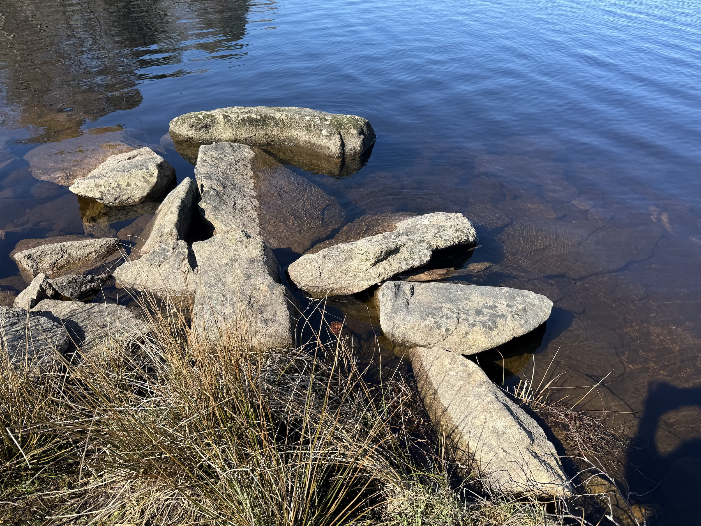
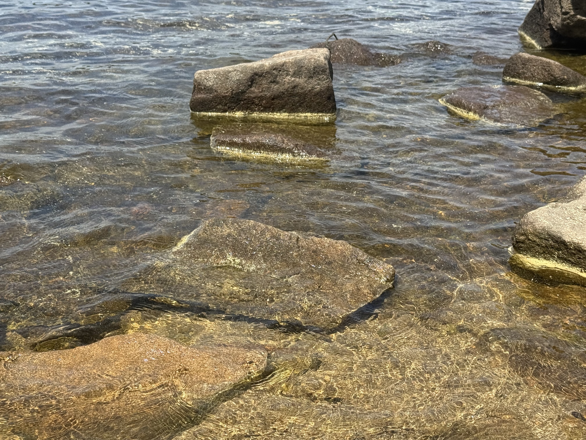

Au bord du lac
Dans cet ensemble, j’ai façonné de petites « pierres en papier », que j’ai immergées dans des mélanges d’eau et de poudre de charbon à différentes concentrations. À travers ce processus, j’explore la sédimentation, l’adhérence de la matière et l’action du temps.
Les traces apparues progressivement évoquent des pierres façonnées par l’érosion au bord d’un lac. J’ai ensuite agencé ces éléments de manière à composer une forme rappelant les lignes laissées par le retrait et l’écoulement de l’eau.